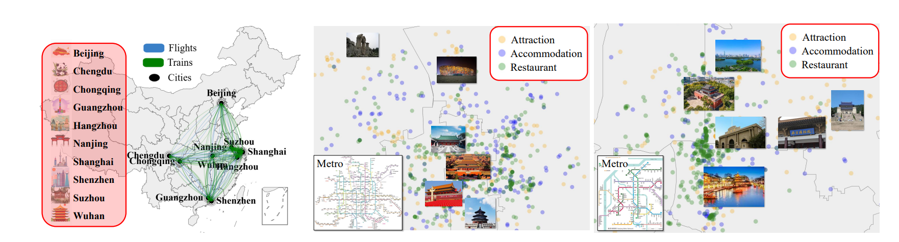
Overview of ChinaTravel Sandbox Environment. Our sandbox incorporates travel information from 10 of the most popular cities in China, offering comprehensive information on attractions, accommodations, and restaurants essential for travel planning. Here is the visualization of information from Beijing and Nanjing.
Environmental constraints act as a feasibility metric, ensuring that the generated plans are both valid and effective. For example, POIs in the plan must exist in the designated city, transportation options must be viable, and time information must remain accurate. The following table summarizes the environmental constraints in ChinaTravel.
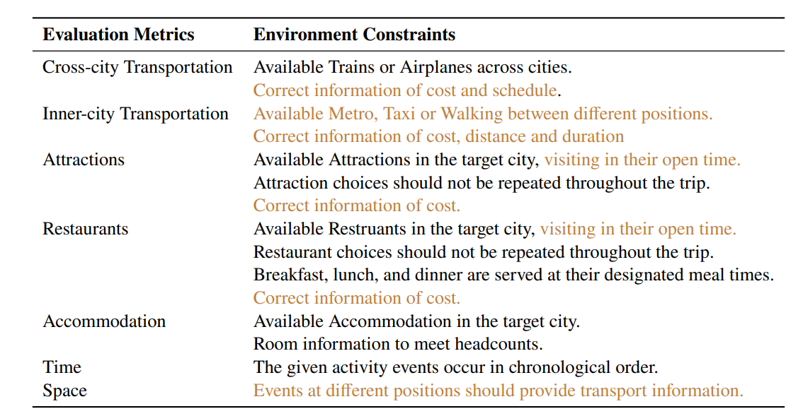
We design the ChinaTravel's Domain-Specific Language (DSL) to provide the automatic evaluation for logical constrains and preference optimization.
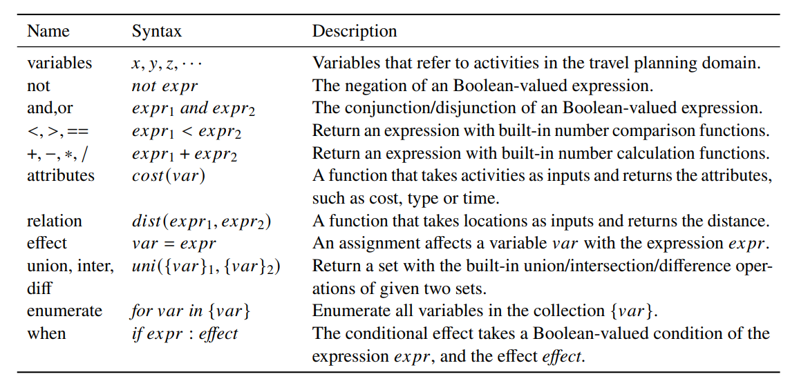
ChinaTravel poses unprecedented challenges rooted in authentic human requests, distinguishing it from prior benchmarks through context-rich long-horizon planning, combinatorial constraint diversity, and open contextual grounding.
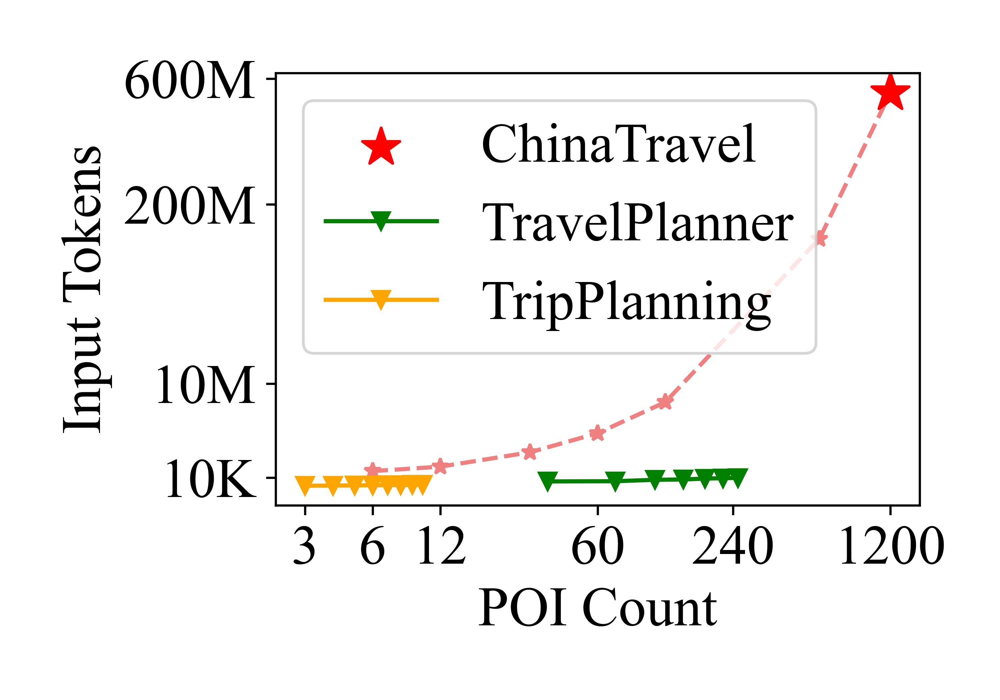
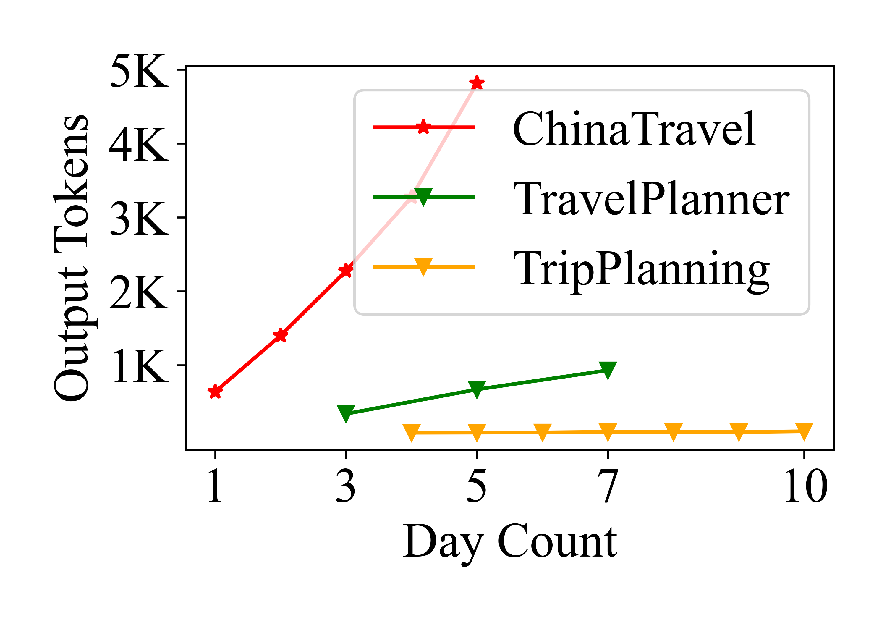
Processing over 1,200 candidate POIs per query and requiring massive input/output token contexts, challenging standard text-based planning paradigms.
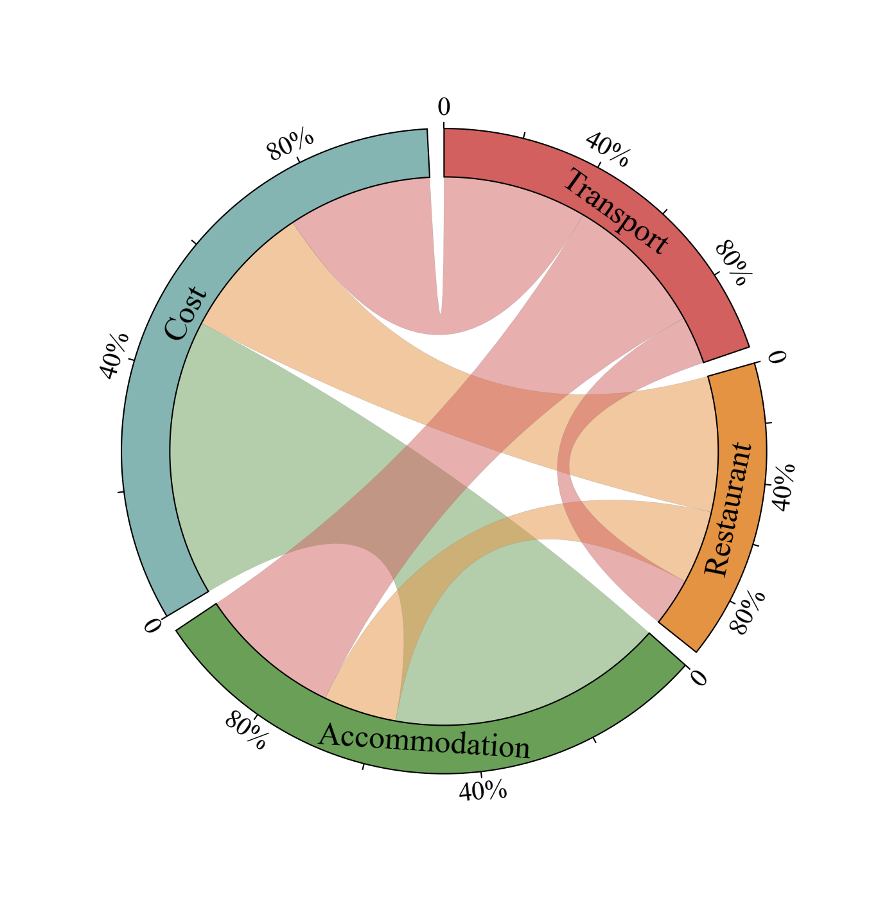
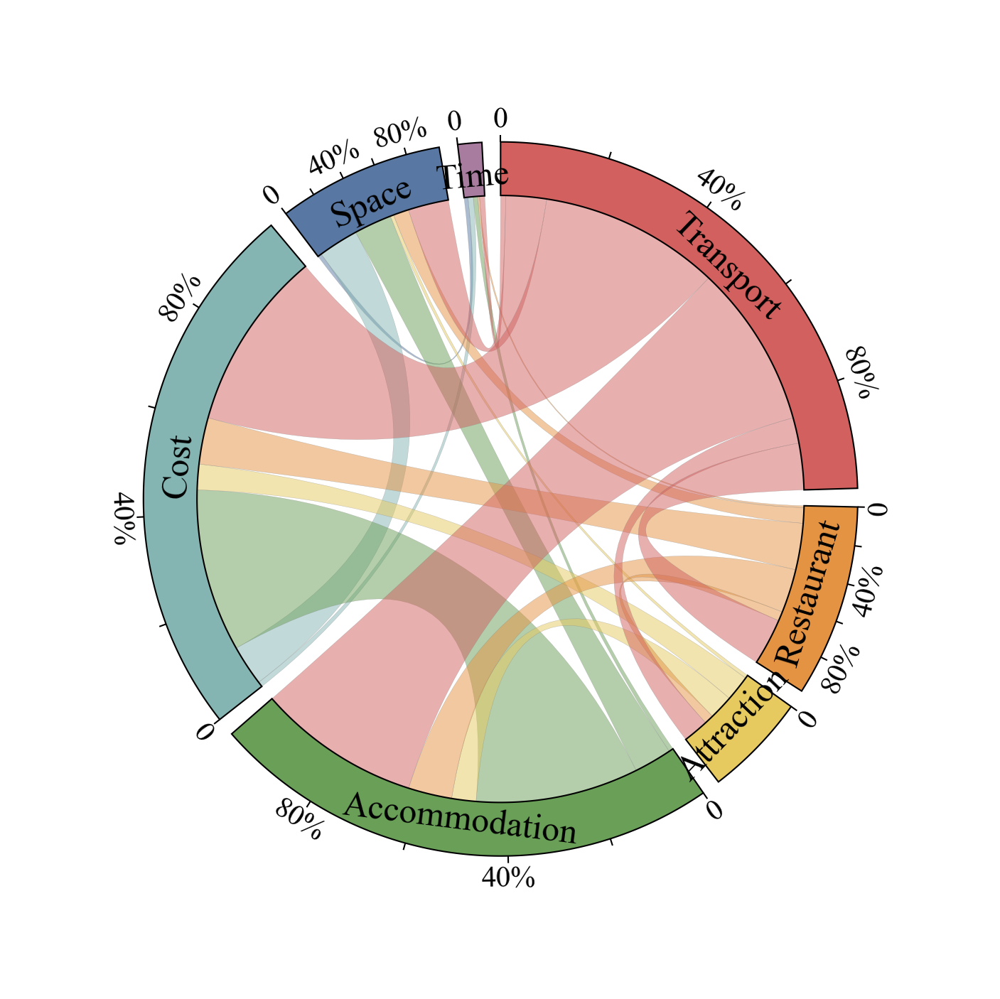
Our compositional DSL supports scaling from 15 synthetic constraints to over 100 unique human constraints, capturing natural Zipf's law distributions of combinations not seen in previous benchmarks.
To tackle the multi-day, multi-POI challenges and open-ended verification, we present an interactive neuro-symbolic pipeline utilizing Reflexion for accurate DSL translation and symbolic depth-first search for constraint-aware itinerary generation.
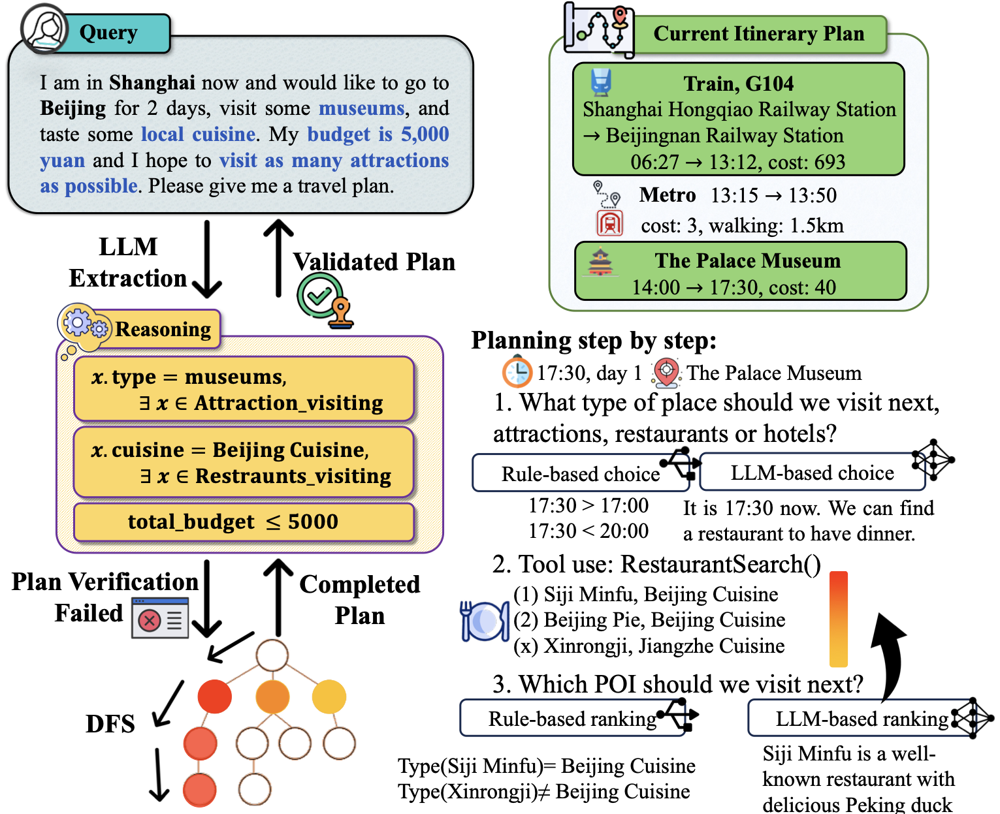
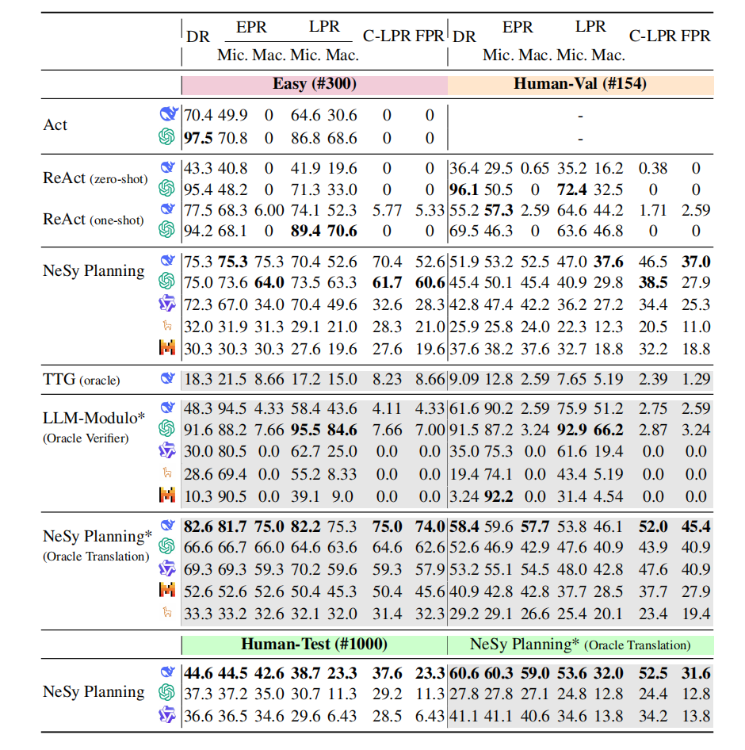
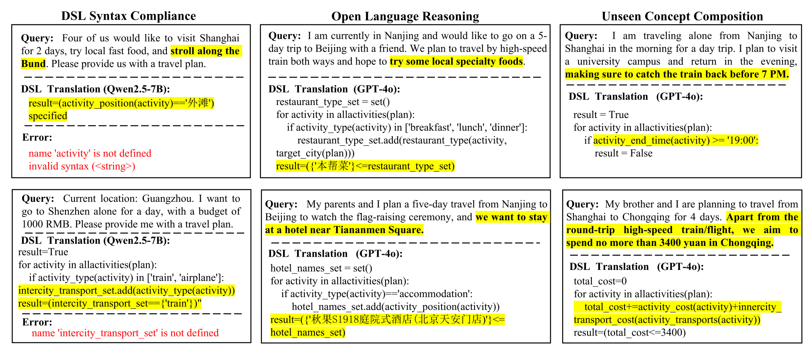
Beyond strict logical constraints, agents must optimize soft preferences (e.g., minimizing costs, maximizing attractions). We explore LLM-guided heuristic search (PEQ) vs symbolic optimization (PDS).
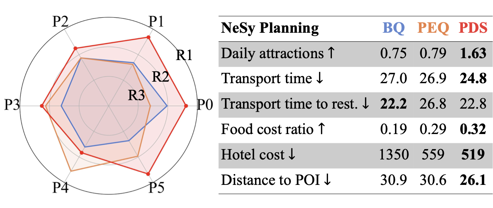
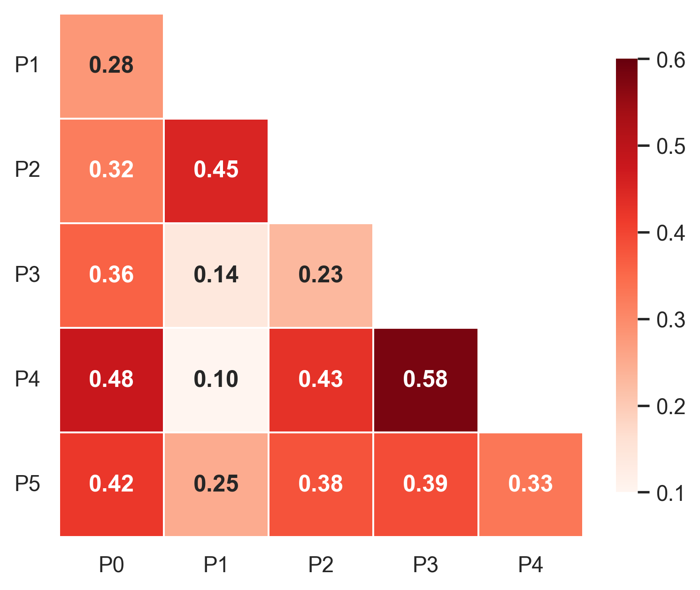
@inproceedings{shao2026chinatravel,
title={ChinaTravel: An Open-Ended Travel Planning Benchmark with Compositional Constraint Validation for Language Agents},
author={Jie-Jing Shao and Bo-Wen Zhang and Xiao-Wen Yang and Bai-Zhi Chen and Si-Yu Han and Jing-Hao Pang and Wen-Da Wei and Guohao Cai and Zhenhua Dong and Lan-Zhe Guo and Yu-feng Li},
booktitle={The Fourteenth International Conference on Learning Representations},
year={2026},
url={https://openreview.net/forum?id=0YRVlxY9BH}
}